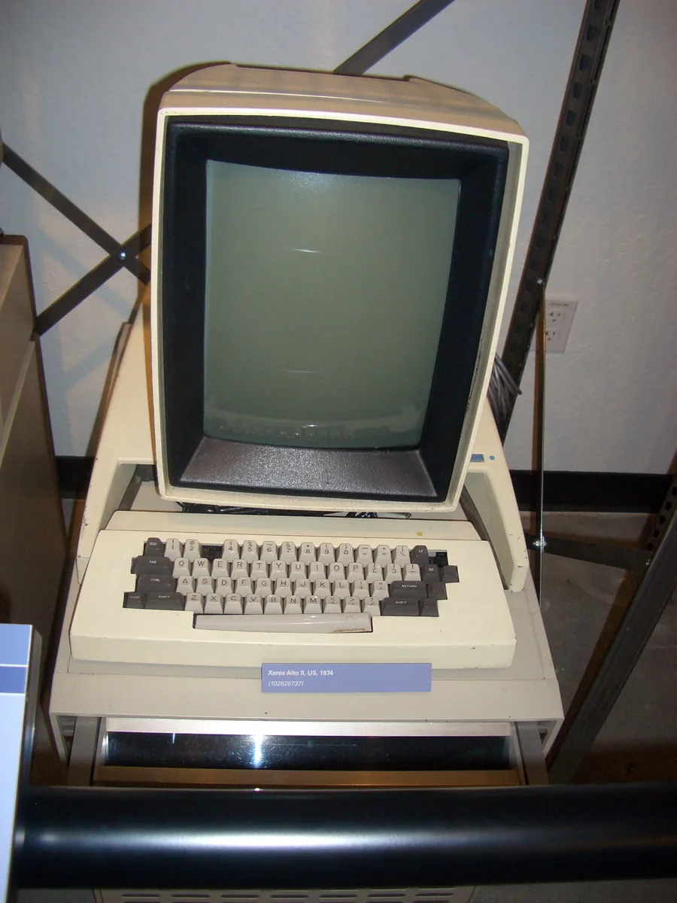

Interfaces gráficas e redes locais
1982 – 1990 · do Commodore 64 ao HyperCard
O terminal de linha de comando deu lugar à tela com janelas, ícones e mouse. O computador virou máquina visual, multimídia e conectada dentro do escritório, mesmo com a internet ainda restrita às universidades.

O Apple Macintosh (1984) populariza a interface gráfica com desktop, janelas e lixeira. Amiga e Atari ST (1985) trazem multitarefa real, som e vídeo. Surgem o System Software do Macintosh, o Windows 1.x e o OS/2 — o nome "Mac OS" só seria adotado oficialmente em 1997.
Em linguagens, C++ e Objective-C consolidam a orientação a objetos. Em rede, a Ethernet é padronizada em 1983, junto com a criação do DNS, e o HyperCard (1987) antecipa a navegação por hiperlinks.
Define os padrões visuais que ainda usamos — é o assunto da atividade desta página.
O desktop publishing democratiza a produção gráfica, e a demoscene do Commodore 64 e do Amiga forma uma geração inteira de programadores e artistas digitais.
O Macintosh não inventou a interface gráfica: ela nasceu no Xerox PARC, nos anos 70. O mérito foi levá-la ao grande público.
Desktop de 1984
Arraste as janelas pela barra de título, arraste um ícone até a lixeira, dê dois cliques para abrir. Depois troque para hoje e compare.
A mesma área de trabalho, com quarenta anos de diferença.
Macintosh 128K · System 1 · 1984
- O que não mudou
- Janela, ícone, pasta, lixeira, barra de menus no topo e arrastar para mover. Todo esse vocabulário estreou aqui e continua igual.
- O que mudou
- Cor, sombra, transparência, cantos arredondados e animação. É acabamento: a gramática da interface é a mesma.
- A tela
- 512 × 342 pixels, em preto e branco puro. Não existia cinza — o que parece cinza é a trama de um pixel preto para um branco, que você vê no fundo da área de trabalho.
- Computer History Museum — acervo do Xerox Alto e histórico da interface gráfica desenvolvida no Xerox PARC nos anos 1970, base do que o Macintosh popularizou.
- Apple — arquivo histórico do Macintosh 128K: lançamento em 24 de janeiro de 1984, System 1 e tela de 512 × 342 pixels em preto e branco puro (sem tela de cinza real).
- Commodore International (histórico) — Amiga 1000, lançado em 23 de julho de 1985, com multitarefa preemptiva real, som estéreo de 4 canais e até 4096 cores.
- Atari Corporation (histórico) — Atari ST, lançado em 1985, cerca de dois meses antes do Amiga 1000.
- IEEE Standards Association — padronização do Ethernet como IEEE 802.3, publicada em 1983.
- IETF — RFC 882 e RFC 883, de Paul Mockapetris (novembro de 1983), que criam o DNS.
- Registro histórico da MacWorld Boston — anúncio do HyperCard por Bill Atkinson, em 11 de agosto de 1987.
- Bjarne Stroustrup, "A History of C++: 1979–1991" (relato do próprio autor) — desenvolvimento do C++ e suas funções virtuais, de 1983 em diante.
- ACM (Proceedings of the ACM on Programming Languages) — "The origins of Objective-C at PPI/Stepstone and its evolution at NeXT", artigo revisado por pares sobre Brad Cox e Tom Love.
- Microsoft (histórico oficial do Windows) e EDN — Windows 1.0 lançado em 20 de novembro de 1985.
- OS/2 Museum e o histórico do OS/2 na Wikipédia (cruzado com o anúncio conjunto IBM/Microsoft de 2 de abril de 1987) — OS/2 1.0 lançado em dezembro de 1987, desenvolvido em parceria entre IBM e Microsoft.
- Apple (histórico de versões do sistema do Macintosh) e Cult of Mac — o sistema de 1984 chamava-se System Software (System 1); o nome "Mac OS" apareceu pela primeira vez na tela de início do System 7.5.1 e só se tornou o nome oficial com o Mac OS 7.6, em 7 de janeiro de 1997. Por isso, o texto desta página evita chamar o sistema de 1984 de "Mac OS".
- IEEE (Paul Brainerd, Aldus Corporation, and the Desktop Publishing Revolution) e History of Information — Paul Brainerd, da Aldus Corporation, cunhou o termo desktop publishing ao lançar o PageMaker em 1985, associado à Apple LaserWriter e à linguagem PostScript da Adobe.
- Finnish Heritage Agency / Museovirasto (órgão oficial do governo finlandês) e Aalto University — a demoscene foi inscrita no Inventário Nacional do Patrimônio Vivo da Finlândia em maio de 2020, primeira manifestação de cultura digital a receber esse reconhecimento; a pesquisa de Markku Reunanen (Aalto University, tese de doutorado de 2017, e o artigo revisado por pares "Crack Intros: Piracy, Creativity, and Communication", International Journal of Communication 9, 2015) documenta a origem da demoscene na cena de cracking do Commodore 64 do início dos anos 1980.
- A modelagem pede a fonte Chicago, do Mac original. Ela não tem licença livre, e o projeto não usa arquivo sem procedência: a estética de 1984 vem do desenho da interface, em 1 bit.
- Datas de vida conferidas no Wikidata; crédito das fotos na página de créditos.